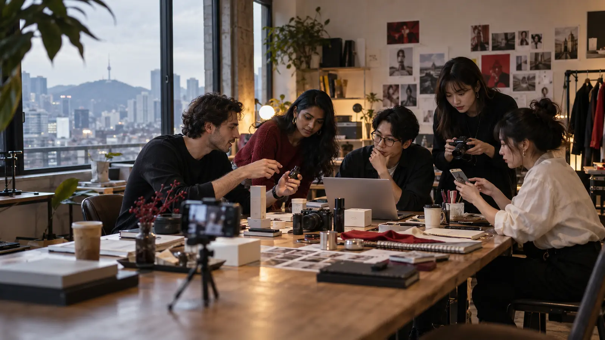

CHINA
인플루언서·라이브커머스Influencer & Live Commerce达人与直播电商
중국 현지 콘텐츠와 판매 협업Local content and commerce collaboration中国本地内容与销售合作
CHINA MARKET OPERATIONS
시장 진입, 유통, 콘텐츠와 라이브커머스.
중국 현장에서 필요한 업무를 연결합니다.Market entry, distribution, content and live commerce—connected through local execution in China.连接市场进入、流通、内容与直播电商所需的中国本地执行。

CAPABILITIES
시장 진입부터 판매와 콘텐츠 운영까지 필요한 업무를 사업 단계에 맞춰 구성합니다.A connected operating scope from market entry to sales and content.根据业务阶段连接市场进入、销售与内容运营。

MARKET
시장 조건, 현지 파트너와 판매 채널 검토Market conditions, partners and sales channels市场条件、本地伙伴与销售渠道

COMMERCE
중국 플랫폼 콘텐츠와 판매 운영 연계China-platform content connected to commerce连接中国平台内容与销售运营

PROGRAM
한중 문화 프로젝트와 플랫폼 실무 교육Korea–China programs and practical education中韩文化项目与平台实务教育
INFLUENCER & EDUCATION
CHINA
중국 현지 콘텐츠와 판매 협업Local content and commerce collaboration中国本地内容与销售合作

KOREA
중국 플랫폼과 크리에이터 커머스 교육China platforms and creator commerce中国平台与创作者商业教育
LOCAL & GLOBAL NETWORK
중국 현지 운영, 콘텐츠·미디어, 커머스·유통과 교육 분야의 파트너를 프로젝트별로 구성합니다.Project-based partners across local operations, content, commerce and education.按项目配置本地运营、内容媒体、商业流通与教育领域伙伴。
협력 네트워크View Network查看合作网络 ↗
BUSINESS INQUIRY
제품, 목표 시장과 필요한 업무를 알려주시면 검토 후 회신드립니다.Share your product, target market and required scope.请告知产品、目标市场与所需业务。
zesia@coregateglobal.com